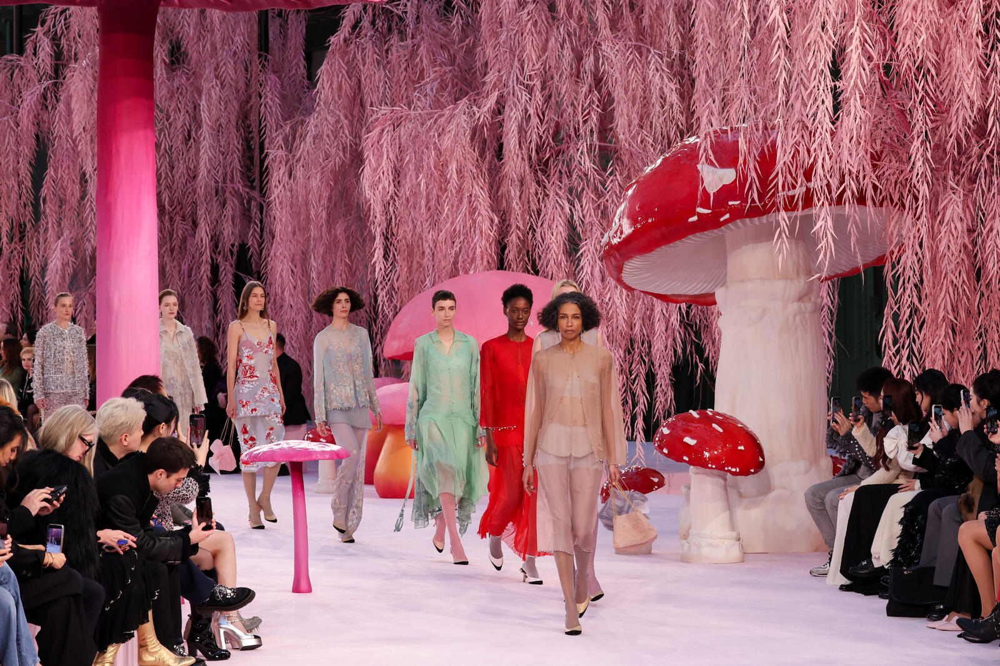

The white room is done. This season, Chanel built a mushroom forest. Dior suspended a hanging garden. Valentino invented a 19th-century peepshow machine and made editors peer through eyepieces one by one. Willy Chavarria turned a boxing arena into a three-act play.
The runway set has become the show itself. Designers stopped asking how to light a collection. They asked how to make a room full of strangers feel like they’ve entered somewhere real.
Chanel’s Mushroom Forest

Chanel SS26 at Paris Fashion Week. Photography by Peter White / Getty Images
Matthieu Blazy built towering mushrooms inside the Grand Palais. A haiku about a bird balanced on fungus anchored the whole collection. Enamel beetles became buttons. Sculpted mushrooms became heels. The scale was monumental and intimate all at once; the set made you want to touch it, to squint and look closer. A dress photographed in front of beige fabric vanishes online. A dress photographed against a mushroom doesn’t.
Dior’s Hanging Cyclamen
Jonathan Anderson suspended 730 cyclamen above the audience at the Musée Rodin. Marc Galliano had given him the flower before his first collection for the house; the gesture lived in his hands, and now it lived in the room itself. Moss scent drifted. Each guest left with a posy. The show was a conversation between designers without words. Anderson looked back at what Galliano built, and he answered by filling a museum with flowers, standing on the ground and looking up.
You had to be there. You had to smell the moss, step through the forest, feel the bass shake the floor.
StaffValentino’s Kaiserpanorama
Alessandro Michele made everyone line up. One person at a time. Peer through the eyepiece. See the dress in stereoscopic 3D, the way a Victorian saw photographs. The Kaiserpanorama is a 19th-century machine that makes you stand alone in front of an image. In 2026, with feeds running endless and parallel, Michele did something strange: he made you wait. Made you choose. Made you see one thing at a time. The dress became singular again.
Willy Chavarria’s Three-Act Play
The Dojo de Paris is a boxing arena. Willy Chavarria filled it with telephone booths, a New York street corner, bedroom vignettes, live music from Mon Laferte and Mahmood. For 30 minutes, the space held something between Broadway and a telenovela. Clothes walked through worlds. The show’s thesis was intimate and urgent; it spoke to shared humanity in a moment when that feels fragile. A dress means nothing if you don’t know where the person wearing it stands.
Prada’s Gutted Building

Prada AW26 at Fondazione Prada, Milan. Photo by Jay Dixit / CC BY-SA 4.0
Miuccia Prada and Raf Simons filled the Deposito with architectural debris. Door frames hung in midair. Plaster mouldings floated. The setting looked like an apartment building hollowed out, stripped to its bones, then reassembled. Each dress stood in dialogue with what came before. Nothing was thrown away. Progress happens when you look at what’s already there and see it again.
Why Now
A dress photographed on Instagram is a flat image. A dress inside a mushroom forest is a memory. Designers built these worlds because a phone screen flattens everything. When you build something that can’t be flattened, people show up. They smell it. They stand in it. They can’t edit it into a perfect square.
This season, the runway became a place again. That matters.
Source: CR Fashion Book — Runway Sets Were the Main Event at Fashion Week, Tatiana Barberi, January 28, 2026